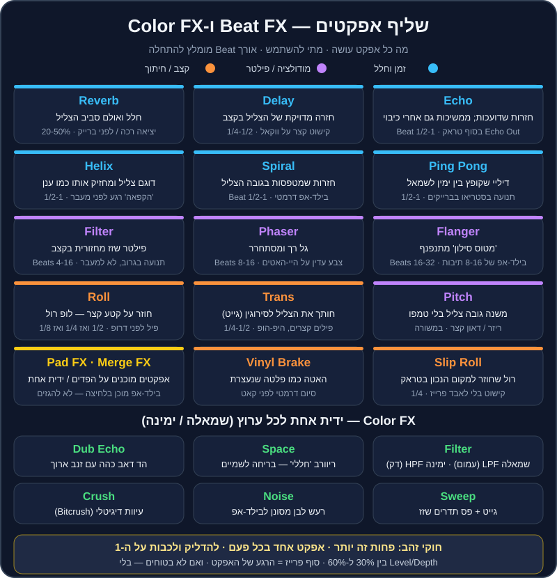

פרק 11 מתוך 20
אפקטים
Effects
מדריך מעשי לאפקטים ב-Rekordbox: כל ה-Beat FX וה-Color FX, מה כל אחד עושה, איך בוחרים אורך Beat, Pad FX ו-Merge FX, מתכונים לפי ז'אנר — ולמה פחות זה כמעט תמיד יותר.
אפקטים הם כמו תבלינים. קורט מלח הופך מנה טובה למעולה; חצי צנצנת — והמנה הלכה. ברוב הסטים הטובים שתשמעו, האפקטים כמעט לא מורגשים: Echo קטן שסוגר טראק, פילטר שמרים מתח לפני דרופ, Reverb שנותן לברייקדאון "לנשום". ודווקא אצל מתחילים, האפקטים הם הדבר הכי רועש בסט.
בפרק הזה נעבור על כל האפקטים של Rekordbox אחד-אחד, נלמד לבחור אורך Beat בלי לנחש, ונבנה "מתכונים" מוכנים לכל ז'אנר שאתם אוהבים — מאפרו האוס ועד ים-תיכוני.
מה תלמדו בפרק#
- איפה האפקטים ב-Rekordbox ומה ההבדל בין
Beat FX,Color FX,Pad FXו-Merge FX. - מה עושה כל אחד מה-Beat FX (Echo, Delay, Reverb, Spiral, Roll, Trans ועוד).
- איך מחשבים אורך Beat, ולמה Echo של פעמה אחת נשמע אחרת מ-Echo של 3/4.
- שלושה מעברים "חובה" עם אפקטים: Echo Out, מעבר פילטר, ו-Loop Roll לפני דרופ.
- מתכונים לפי ז'אנר, וטעויות נפוצות.

איפה האפקטים נמצאים#
Beat FX — אפקטים מסונכרנים לקצב#
ה-Beat FX הם אפקטים שה"זמן" שלהם נמדד בפעמות (Beats) של הטראק. אם הטראק ב-124 BPM ובחרתם Echo של פעמה אחת — כל חזרה תגיע בדיוק על הפעמה הבאה. זה מה שהופך אותם למוזיקליים.
Color FX — ידית אחת לכל ערוץ#
ה-Color FX (ב-Rekordbox נקראים גם Sound Color FX) עובדים אחרת: ידית אחת לכל ערוץ במיקסר. מרכז = כבוי. מסובבים שמאלה או ימינה — והאפקט גדל. סוג האפקט (Filter, Space וכו') נבחר במסך, והוא אותו סוג לכל הערוצים.
ב-DDJ-FLX4 הידית הזו מסומנת CFX, וכברירת מחדל היא פילטר. יש לו גם מצב Smart CFX, שבו ידית אחת מפעילה שילוב של כמה אפקטים.
Pad FX ו-Release FX#
ב-Pad FX כל פד בקונטרולר הוא אפקט מוכן מראש — סוג, אורך Beat ועוצמה. לוחצים ומחזיקים — האפקט פועל; משחררים — הוא נעלם. זו דרך מהירה ומדויקת להשתמש באפקטים בלי לסובב ידיות.
חלק מהפדים הם Release FX — אפקטי "סיום" כמו Echo ארוך, Backspin או בלימת פלטה, שנועדו להוציא טראק בצורה דרמטית לפני שהבא נכנס.
Merge FX#
Merge FX הוא אפקט "בילד-אפ" שמשלב כמה אפקטים (פילטר, נויז, רול ועוד) על ידית אחת: מסובבים — והמתח עולה בהדרגה. זה זמין ב-Rekordbox עם חלק מהקונטרולרים (גם ב-DDJ-FLX4, דרך ה-Hardware Unlock). זה מהנה מאוד — ובדיוק בגלל זה קל להגזים.
כל ה-Beat FX, אחד-אחד#
ברשימה הבסיסית של Rekordbox יש את האפקטים הבאים (בגרסאות חדשות יש לעיתים עוד כמה):
| אפקט | מה הוא עושה | Beat מומלץ להתחלה | מתי להשתמש | זהירות |
|---|---|---|---|---|
Echo |
חזרות שדועכות בהדרגה; ממשיכות גם אחרי שמכבים | 1/2 או 1 | Echo Out בסוף טראק, סגירת משפט ווקאלי | יותר מ-60% Level מייצר "בוץ" |
Delay |
חזרה מדויקת של הצליל בקצב, בלי זנב ארוך | 1/4, 1/2, 3/4 | קישוט קצר על ווקאל, סנר או היי-האט | מתנגש עם סינקופות |
Ping Pong |
דיליי שקופץ בין ימין לשמאל | 1/2 או 1 | תנועה בסטריאו בברייקדאון | ברחבה עם רמקול מונו — לא מורגש |
Spiral |
חזרות שמשנות גובה צליל ו"מסתחררות" | 1/2 או 1 | בילד-אפ דרמטי, מעבר בין ז'אנרים | מהר מאוד נשמע "טריקי" |
Reverb |
חלל, אולם, הד של חדר | Level 20-50% | ריכוך יציאה, הכנה לברייקדאון | על באס — מטשטש הכול |
Trans |
חותך את הצליל לסירוגין (גייט קצבי) | 1/4 או 1/2 | פילים קצרים, היפ-הופ, אפקט "סקרץ'" | מעייף אחרי 2 תיבות |
Filter |
פילטר שזז מחזורית בקצב | 4-16 | תנועה עדינה בתוך גרוב | לא מחליף פילטר של מעבר |
Flanger |
צליל "מטוס סילון" מתנפנף | 16-32 | בילד-אפ של 8-16 תיבות | קלישאה אם בכל דרופ |
Phaser |
גל רך ומסתחרר | 8-16 | צבע עדין על היי-האטים | על ווקאל — מוזר |
Pitch |
משנה גובה צליל בלי לשנות טמפו | — | ריזר קצר או "דאון" לפני קאט | מזייף מול הדק השני |
Roll |
דוגם קטע קצר וחוזר עליו (לופ רול) | 1/2, אחר כך 1/4, אחר כך 1/8 | פיל לפני דרופ, בילד-אפ | לכבות בדיוק על ה-1 |
Slip Roll |
כמו Roll, אבל הטראק ממשיך "ברקע" וחוזר למקום הנכון | 1/4 | קישוט בלי לאבד את הפרייז | — |
Vinyl Brake |
האטה עד עצירה, כמו פלטה שכובתה | — | סיום דרמטי לפני קאט | פעם בערב, לא בכל מעבר |
Helix |
דוגם את הצליל ומחזיק אותו כמו "ענן" מתמשך | 1/2 או 1 | הקפאת רגע לפני מעבר | זנב ארוך — לכבות בזמן |
אורך Beat — בלי לנחש#
ה-Beat הוא יחידת הזמן של האפקט. הנה מה שזה אומר בשניות, ב-124 BPM (קצב האוס טיפוסי):
| Beat | מה זה מוזיקלית | אורך ב-124 BPM | איך זה נשמע |
|---|---|---|---|
| 1/8 | שלושים-ושתיים | 0.06 שנ' | רטט, "זמזום" |
| 1/4 | שש-עשרה | 0.12 שנ' | מהיר, קצבי |
| 1/2 | שמינית | 0.24 שנ' | חי, נושם |
| 3/4 | שמינית מנוקדת | 0.36 שנ' | "מתנדנד", מוסיף גרוב |
| 1 | פעמה (רבע) | 0.48 שנ' | ההד הכי "ברור" |
| 2 | חצי תיבה | 0.97 שנ' | מרווח, דרמטי |
| 4 | תיבה | 1.94 שנ' | הד של משפט שלם |
הנוסחה: אורך במילישניות = 60,000 ÷ BPM × מספר הפעמות. ב-124 BPM, פעמה = 60,000 ÷ 124 ≈ 484 מילישניות.
Color FX, אחד-אחד#
| אפקט | שמאלה | ימינה | שימוש קלאסי |
|---|---|---|---|
Filter |
LPF — חותך גבוהים, הצליל נהיה עמום ו"מתחת למים" |
HPF — חותך נמוכים, הצליל נהיה דק ו"מרחף" |
מעבר פילטר, בילד-אפ, הכנסת טראק "מאחורי" אחר |
Space |
ריוורב "חללי" עם דגש על נמוכים | ריוורב עם דגש על גבוהים | "בריחה לשמיים" בסוף פרייז |
Dub Echo |
הד דאב כהה | הד דאב בהיר | זנב דאבי לטכנו, דיפ ואפרו |
Sweep |
אפקט גייט שמהדק את הצליל | פס תדרים שזז | תנועה ומתח בגרוב |
Noise |
רעש לבן מסונן לנמוכים | רעש לבן מסונן לגבוהים | בילד-אפ בסגנון EDM |
Crush |
עיוות דיגיטלי עדין | עיוות חזק יותר | "לכלוך" לטכנו והארד טכנו |
שלושה מעברים עם אפקטים שכל DJ חייב לדעת#
1. Echo Out — יציאה נקייה מכל מצב#
זה הכלי הכי שימושי בארגז: מעבר בין טמפואים, בין ז'אנרים, בין סולמות רחוקים — ואפילו "חילוץ" ממעבר שהשתבש.
- בחרו
Echo, Beat של 1/2 או 1,Level/Depthבסביבות 50%, על הערוץ של הטראק היוצא. - הכינו את הטראק הבא בדק השני — עם Hot Cue בנקודת הכניסה (אינטרו או דרופ).
- ספרו לסוף פרייז (32 תיבות). בפעמה האחרונה של התיבה האחרונה — הדליקו את ה-Echo.
- מיד אחרי — על ה-1 של התיבה הבאה — הורידו את הפיידר של הטראק היוצא (או כבו אותו), וההד ממשיך לבד.
- על אותו 1, או פעמה-שתיים אחרי, הפעילו את הטראק החדש.
- כבו את ה-Echo (הזנב ידעך בעצמו) והחזירו את ה-Level לאפס לקראת הפעם הבאה.
2. מעבר פילטר — "להחליף מאחורי הקלעים"#
- הכניסו את הטראק החדש כשה-
Color FXשלו עלHPFכמעט עד הסוף (ימינה) — שומעים רק היי-האטים דקים. - לאורך 16 תיבות, פתחו לאט את הפילטר של החדש לכיוון המרכז.
- במקביל, סובבו את הטראק הישן לכיוון
HPF(אוLPF, לטעמכם) — הוא "מתרחק". - על תחילת פרייז — החלפה: החדש במרכז (נקי), הישן מסונן לגמרי, ואז הפיידר שלו למטה.
3. Loop Roll לפני דרופ#
- כמה פעמות לפני סוף הבילד-אפ, הפעילו
Rollשל 1/2 (אוSlip Roll). - אחרי פעמה-שתיים, קצרו ל-1/4, ואז ל-1/8 — המתח עולה.
- בדיוק על ה-1 של הדרופ — כבו. הדרופ נכנס בעוצמה מלאה.
בונוס: בילד-אפ של 16 תיבות, צעד אחר צעד#
כשהטראק עצמו לא מספיק דרמטי, אפשר "לבנות" מתח בעצמכם. ספרו מתחילת פרייז של 16 תיבות לפני הדרופ (בטראקים שלנו: 16 תיבות לפני Hot Cue D):
| תיבות | מה עושים | למה |
|---|---|---|
| 1-8 | Color FX → Filter מסתובב לאט ימינה (HPF) עד בערך שעה 2 |
הבאס מתחיל להיעלם, הקהל מרגיש "ציפייה" |
| 9-12 | מוסיפים Flanger של 16 פעמות על Level נמוך (30%) |
תנועה ועלייה |
| 13-14 | מעלים את ה-Level של ה-Flanger ל-50-60%, ה-HPF ממשיך לעלות | שיא המתח |
| 15 | מחליפים ל-Roll של 1/4 (או מכבים Flanger ומפעילים Roll) |
"מתופף" שמגביר קצב |
| 16 | Roll של 1/8 בשתי הפעמות האחרונות | הצעקה שלפני הדרופ |
| 1 (הדרופ) | הכול נכבה בבת אחת: Roll כבוי, Filter למרכז, Flanger כבוי | הדרופ חוזר בעוצמה מלאה עם באס |
פחות זה יותר — חוקי הזהב#
- אפקט אחד בכל פעם. Echo + Flanger + Reverb יחד = רעש.
- להדליק ולכבות על ה-1. אפקט שמתחיל באמצע תיבה נשמע כמו טעות.
- סוף פרייז הוא הרגע. אפקטים עובדים הכי טוב במעברים בין חלקים (כל 8, 16 או 32 תיבות).
Level/Depthבין 30% ל-60% כמעט תמיד מספיק. 100% זה לרגעים מיוחדים.- אל תשאירו אפקט דלוק "בטעות". סמנו לעצמכם: הדלקתי → אני אחראי לכבות.
- אפקטים מוסיפים ווליום. Reverb ו-Echo מצטברים. עקבו אחרי המטרים — אל תיכנסו לאדום (ראו פרק 5).
- אפקט לא מתקן ביטמאץ'. אבל Echo Out יכול לחלץ אתכם ממעבר שהשתבש — וזה לגיטימי לגמרי.
- בחתונות ובאירועים — במשורה. הקהל רוצה לשמוע את השיר שהוא אוהב, לא את הפלאנג'ר שלכם על המילים.
אפקטים ו-EQ — מי עושה מה#
הרבה מתחילים משתמשים בפילטר במקום ב-EQ ולהפך. הנה ההבדל המעשי:
- EQ (Low/Mid/High) הוא "ניהול תנועה": מי מהשניים מחזיק את הבאס עכשיו, למי יש את הסנר. הוא קבוע, שקט, ולא אמור להישמע כמו אפקט.
- פילטר הוא "תנועה מוזיקלית": הקהל אמור לשמוע אותו זז. הוא יוצר מתח ושחרור.
- אפקטי זמן (Echo, Reverb) מוסיפים צליל חדש שלא היה בטראק — ולכן גם ווליום חדש.
מתכונים לפי ז'אנר#
דיפ האוס ואפרו האוס#
- Reverb או
Spaceעדין על פיל של פרקשן בסוף פרייז — נותן "אוויר". Dub Echoעל צ'אנט או ווקאל קצר: חצי סיבוב ידית, ובחזרה.- פילטר ארוך (16 תיבות) במעבר בין שני טראקים של פרקשן.
- Echo Out של פעמה אחת בסוף סט שקיעה — יציאה רכה.
- טראקים לתרגול: house-01, house-02, house-09, house-10, house-11.
טק האוס#
HPF+Rollשל 1/2 ואחר כך 1/4 בשתי הפעמות שלפני הדרופ.Transשל 1/4 לתיבה אחת על הלופ של הבאסליין — אפקט "גמגום" שהקהל אוהב.Delayשל 3/4 על היי-האטים — מוסיף שאפל.- חיתוך באס עם EQ חשוב יותר מכל אפקט. האפקט הוא קישוט.
- טראקים לתרגול: house-05 עד house-08.
מלודיק טכנו#
Reverb+Spiralבכניסה לברייקדאון — "פתיחת שמיים".Ping Pongשל 1 על ארפג'יו בברייקדאון.- Echo Out של 2 פעמות מברייקדאון לברייקדאון (ראו
transition-10). Spaceכדי "להרחיק" טראק לפני שהבא נכנס.- טראקים לתרגול: techno-05 עד techno-08.
טכנו של שיא והארד טכנו#
Flangerשל 32 פעמות לאורך 8 תיבות של בילד-אפ.Noise(Color FX) שעולה לאורך 16 תיבות, ונחתך על ה-1.Crushעדין על הקיק לפני הדרופ — "לכלוך".Rollקצר מאוד (1/8) לפעמה אחת — כמו פיל של מתופף.- טראקים לתרגול: techno-01 עד techno-04, techno-11, techno-12.
היפ-הופ, רגאטון וים-תיכוני#
- Echo Out של 1/2 על המילה האחרונה של משפט — ואז קאט לשיר הבא. זה המעבר הכי נפוץ ב-Open Format.
Vinyl Brakeאו Backspin (מ-Pad FX) כסיום דרמטי — פעם-פעמיים בערב, לא יותר.Transקצר על הוק של היפ-הופ — נותן תחושת סקרץ'.- Reverb על הצליל האחרון של שיר ים-תיכוני לפני מעבר לרמיקס האוס.
- טראקים לתרגול: mainstream-05 עד mainstream-09, mainstream-13, mainstream-14.
ביג רום / EDM#
- בילד-אפ קלאסי:
Noise+ פילטרHPFשעולים יחד, ו-Rollשל 1/4 ואז 1/8 בשתי הפעמות האחרונות. הכול נחתך על ה-1 של הדרופ. Merge FXבדיוק בשביל זה — אבל רק כשהטראק עצמו לא מכיל כבר בילד-אפ ענק.- טראקים לתרגול: mainstream-01, mainstream-02 (וגם
transition-05— קאט).
פסיכדלי טראנס#
PhaserאוFlangerאיטי על ההיי-האטים בזמן לופ.Delayשל 3/4 על ליד — מוסיף את ה"פסיכדליה".- זהירות עם Reverb על הבאס המתגלגל — הוא כבר מספיק צפוף.
- טראקים לתרגול: breadth-01, breadth-02.
סדר לימוד מומלץ#
אל תנסו ללמוד 20 אפקטים בשבוע. הנה סדר שעובד, מהשימושי ביותר לפחות שימושי:
- פילטר (Color FX) — שבוע שלם. סיבוב איטי, מעבר פילטר, הכנסת טראק "מאחורי" אחר.
- Echo — Echo Out בכל מצב: סוף טראק, קפיצת טמפו, חילוץ ממעבר שהשתבש.
- Reverb / Space — יציאה רכה ו"אוויר" בסוף פרייז.
- Roll — בילד-אפ קצר לפני דרופ, עם כיבוי מדויק על ה-1.
- Delay ו-Trans — קישוטים קצביים קצרים.
- Flanger ו-Phaser — לבילד-אפים ארוכים, במשורה.
- השאר (Spiral, Helix, Vinyl Brake, Pitch, Merge FX) — כשהבסיס כבר יושב טוב.
טעויות נפוצות#
| טעות | איך זה נשמע | התיקון |
|---|---|---|
| אפקט על הערוץ הלא נכון | האפקט "לא עובד", או עובד על השיר הלא נכון | בדקו את בורר הערוץ לפני ההדלקה |
אפקט על Master כל הערב |
הסט כולו נשמע מעובד ושטוח | השתמשו ב-Master רק לרגעים מיוחדים |
| Level של 100% | הצליל המקורי נעלם, הכול "רטוב" | 30-60% |
| Reverb ארוך על באס | בוץ בנמוכים | פחות Level, או אפקט על טראק בלי באס |
| Roll שלא נכבה בזמן | הדרופ "מאחר" | Quantize דולק, ותרגלו את הכיבוי על ה-1 |
| Echo שנשכח דלוק | הטראק הבא נשמע עם הד מוזר | אחרי Echo Out — Level חזרה לאפס |
| אפקטים במקום מעבר טוב | נשמע כמו כיסוי | קודם מעבר נקי עם EQ, אחר כך תבלין |
תרגילים#
סיכום#
Beat FXמסונכרנים לקצב;Color FXהם ידית אחת לכל ערוץ;Pad FXו-Merge FXהם קיצורי דרך מוכנים מראש.- אורך Beat = זמן. פעמה ב-124 BPM היא כחצי שנייה. Flanger של 32 פעמות = 8 תיבות.
- שלושת המעברים הכי חשובים: Echo Out, מעבר פילטר ו-Loop Roll.
- להדליק ולכבות על ה-1, אפקט אחד בכל פעם, 30-60% Level.
- אפקט הוא תבלין, לא המנה.
עכשיו כשיש לכם את כל הכלים למעבר בודד — הגיע הזמן לחשוב בגדול: איך בונים סט שלם עם התחלה, אמצע וסוף. ← פרק 12: בניית סט